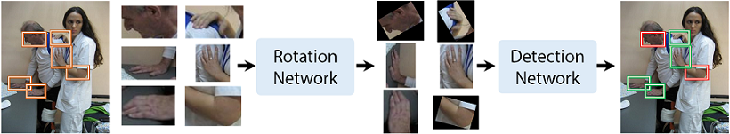

|
Joint Hand Detection and Rotation Estimation by Using CNN Xiaoming Deng1 Ye Yuan1 Yinda Zhang2 Ping Tan3 Liang Chang4 Shuo Yang1 Hongan Wang1 1 Institute of Software CAS 2 Princeton University 3 Simon Fraser University 4 Beijing Normal University |
|  |
AbstractHand detection is essential for many hand related tasks, e.g. parsing hand pose, understanding gesture, which are extremely useful for robotics and human-computer interaction. However, hand detection in uncontrolled environments is challenging due to the flexibility of wrist joint and cluttered background. We propose a deep learning based approach which detects hands and calibrates in-plane rotation under supervision at the same time. To guarantee the recall, we propose a context aware proposal generation algorithm which significantly outperforms the selective search. We then design a convolutional neural network(CNN) which handles object rotation explicitly to jointly solve the object detection and rotation estimation tasks. Experiments show that our method achieves better results than state-of-the-art detection models on widely-used benchmarks such as Oxford and Egohands database. We further show that rotation estimation and classification can mutually benefit each other. VideoPaper X. Deng, Y. Yuan, Y. Zhang, P. Tan, L. Chang, S. Yang, H. Wang. DownloadThe rotation annotation of hand detection dataset will be available. |